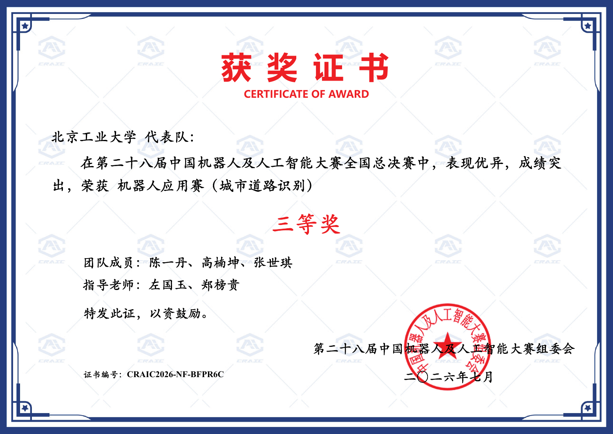

01 / SMI · 信号链与设备通信
01 / SMI · 信号链与设备通信光电设计竞赛华北区一等奖 · 国创项目进行中
激光自混合干涉
血管参数测量系统
围绕 SMI 传感研究，连接采集硬件、ESP32 上传、服务器算法、数据库与移动 App。我负责 App 全部前后端、ESP32 到服务器通信，以及算法重训练与优化。
查看完整项目介绍 →CHEN YIDAN / ENGINEERING PORTFOLIO
我是陈一丹，来自北京工业大学。本学期开始学习 Verilog / SystemVerilog 与 FPGA，希望向数字 IC 设计方向发展。这里展示我在设备通信、算法工程化与机器人视觉中的项目实践。
查看工程项目 ↓ 技术证据与面试索引 →01 / SMI · 信号链与设备通信光电设计竞赛华北区一等奖 · 国创项目进行中
围绕 SMI 传感研究，连接采集硬件、ESP32 上传、服务器算法、数据库与移动 App。我负责 App 全部前后端、ESP32 到服务器通信，以及算法重训练与优化。
查看完整项目介绍 →
02 / 城市道路识别 · 机器人应用赛中国机器人及人工智能大赛 · 全国总决赛三等奖
参加第二十八届中国机器人及人工智能大赛机器人应用赛（城市道路识别），获全国总决赛三等奖。参赛报告记载我担任队长，负责 U-Net 训练调参与 detectline 参数调整，聚焦视觉感知到车道跟踪的链路。
查看项目与获奖记录 →目前的课程基础覆盖编程、电路、器件与数字逻辑。本学期结合 Verilog / SystemVerilog 与 FPGA 学习，逐步开展数字系统设计实践。
本学期正在学习硬件描述语言与 FPGA，尚无独立完成的 RTL / FPGA 项目可展示。现阶段以已完成的工程实践说明问题分析与系统联调能力，后续补充可运行的 RTL、testbench、仿真波形与板级验证记录。
查看后续实践计划 →我是陈一丹，来自北京工业大学。希望将既有的设备通信、信号处理与机器人调试经历，逐步延伸到数字电路设计与验证。
在 SMI 项目中，我负责 App 前后端、ESP32 与服务器通信及算法重训练优化；在城市道路识别项目中，我担任队长，负责 U-Net 训练调参与车道跟踪参数调整。具体贡献、团队协作与验证范围见各项目详情。